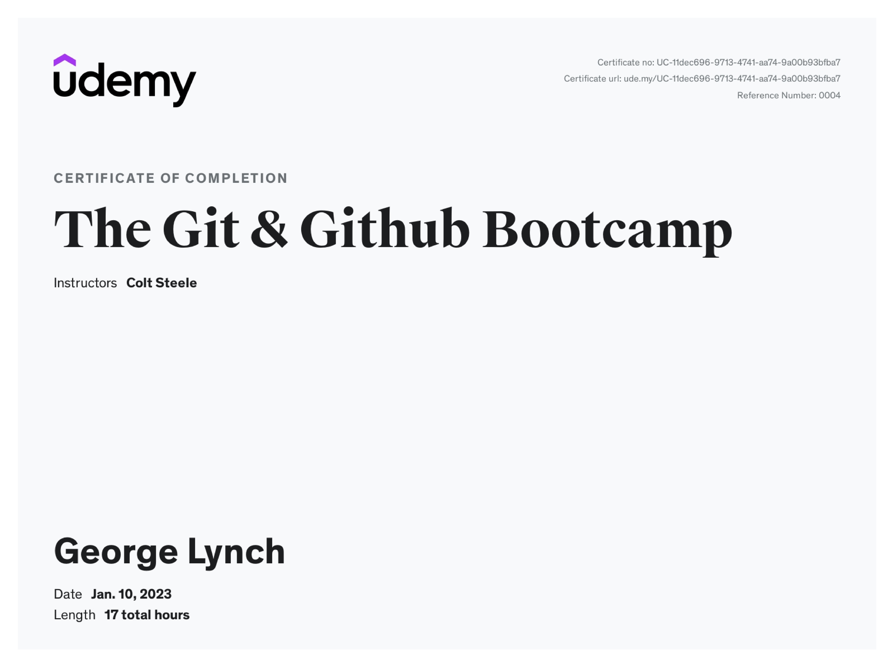
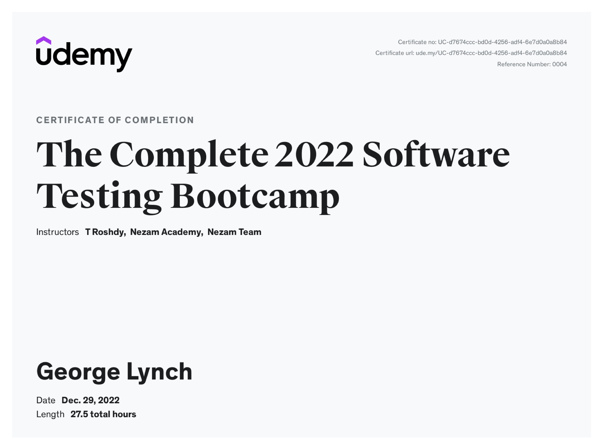

Certifications



I'm a passionate developer ready to take on new challenges.
Hey there! 👋
I'm George Lynch, and let me tell you a bit about my journey.
I started out in the world of retail management, navigating the hustle and bustle of customer service and operations. But then, something unexpected happened – the tech bug bit me hard! With little computer knowledge at first, I took the plunge into the vast world of programming, and boy, what a ride it's been.
Now, I proudly call myself a full-stack programmer, specializing in HTML, CSS, and JavaScript. From crafting beautiful web pages to coding complex functionalities, I love every aspect of bringing ideas to life in the digital realm.
One thing you should know about me is that I'm not just about solo coding sessions. I thrive in team environments, bouncing ideas off each other, collaborating, and collectively creating something awesome.
I'm not one to shy away from challenges – in fact, I embrace them wholeheartedly. A fast learner by nature, I believe in the power of continuous growth and lifelong learning. Every day is an opportunity to expand my skill set and dive deeper into the ever-evolving world of technology.
Currently, I'm flexing my skills as a Quality Assurance Analyst, where testing software is certainly a blast. But deep down, my heart yearns to do more than just test – I want to build, innovate, and make a tangible impact through coding.
So, here I am, fueled by passion, driven by curiosity, and ready to embark on the next chapter of my journey – one line of code at a time.
My foray into the tech industry marks the dawn of a new chapter in my professional journey. Presently, I serve as a Quality Assurance Analyst at Paycom, where I am actively engaged in shaping the trajectory of our products through meticulous testing and validation processes.
At Paycom, I play a pivotal role in ensuring the quality and reliability of our software solutions. My responsibilities encompass a wide array of tasks, ranging from testing new developments to implementing data fixes and integrating new features into our products. Operating within an agile framework, I collaborate closely with cross-functional teams to streamline our testing processes and accelerate product delivery.
Over the course of my tenure at Paycom, I have honed a diverse skill set that empowers me to navigate the complexities of software testing with precision and efficiency. Key among these skills is my proficiency in MySQL, which enables me to effectively manage and manipulate data sets to support our testing efforts. Additionally, I have developed expertise in automated testing methodologies, empowering me to automate repetitive tasks and expedite the testing lifecycle.
Central to my role as a Quality Assurance Analyst is my commitment to conducting thorough regression testing and functionality testing. By meticulously scrutinizing every aspect of our products, I ensure that they not only meet but exceed the expectations of our clients. Through a combination of manual testing techniques and cutting-edge tools, I strive to uncover and address any potential issues before they impact end-users.
My tenure at Paycom has been characterized by continuous growth and learning. Each day presents new challenges and opportunities for innovation, and I am committed to embracing them with enthusiasm and diligence. As I continue to evolve in my role, I remain dedicated to delivering best-in-class solutions that drive value for our clients and propel Paycom to new heights of success.
In summary, my experience at Paycom as a Quality Assurance Analyst has equipped me with invaluable skills and insights that have fortified my foundation in the tech industry. I am proud to contribute to a team that is at the forefront of innovation, and I am eager to continue pushing the boundaries of possibility in pursuit of excellence.
From 2004 to 2007, I embarked on an enriching journey at the University of Central Oklahoma, nestled in the vibrant city of Edmond, Oklahoma. During this time, I devoted myself to the pursuit of knowledge and earned my Bachelor of Science degree in Kinesiology. My educational journey at the University of Central Oklahoma laid a strong foundation for my future endeavors. I discovered a profound passion for training athletes, fueled by a desire to unlock their full potential and enhance their performance on the field. However, as life unfolded and responsibilities grew with a burgeoning family, I found myself at a crossroads. Driven by an insatiable curiosity and a hunger for new challenges, I ventured into the realm of technology. I recognized the boundless opportunities it presented and embarked on a transformative journey to reinvent myself in this dynamic field. To equip myself with the requisite skills and knowledge, I pursued several certifications tailored to the burgeoning tech industry landscape. This transition from the realm of sports and human performance to the realm of technology was not merely a career pivot; it was a profound evolution of my skills and aspirations. In essence, I transitioned from programming humans to programming machines, leveraging my innate passion for optimization and improvement in a new domain. As a lifelong learner, I approach each day with a sense of curiosity and a commitment to continuous growth. The tech industry is ever-evolving, presenting new challenges and opportunities with each passing moment. I embrace this fluidity and remain steadfast in my pursuit of excellence, knowing that my educational journey is far from over. My educational experience serves as a testament to my adaptability, resilience, and unwavering determination to chart my own path in the tech industry. With each milestone achieved and each skill acquired, I am poised to navigate the ever-changing landscape of technology with confidence and conviction. In conclusion, my educational journey from Kinesiology to the tech industry reflects not only a professional transition but a personal evolution—a testament to my relentless pursuit of knowledge and my unwavering commitment to self-improvement. As I continue to traverse the realms of technology, I am fueled by a sense of purpose and a boundless enthusiasm for the limitless possibilities that lie ahead.